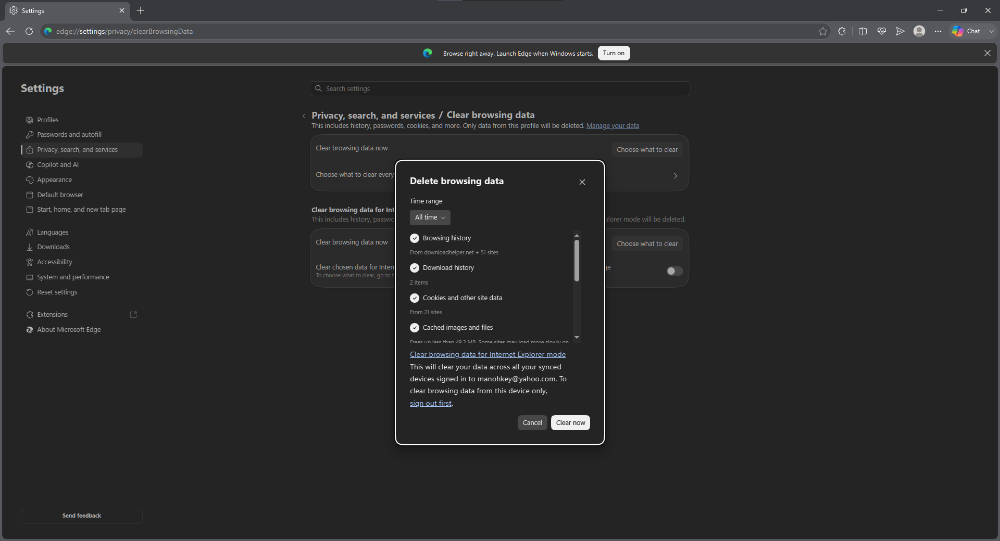
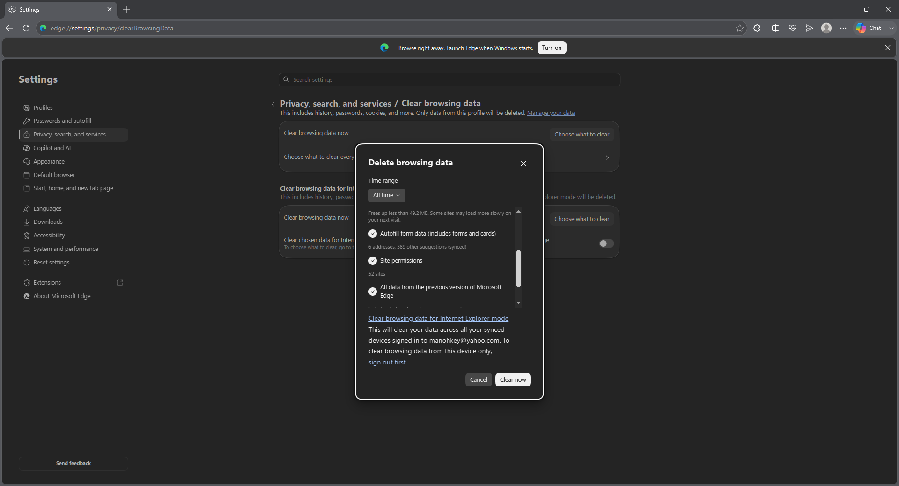
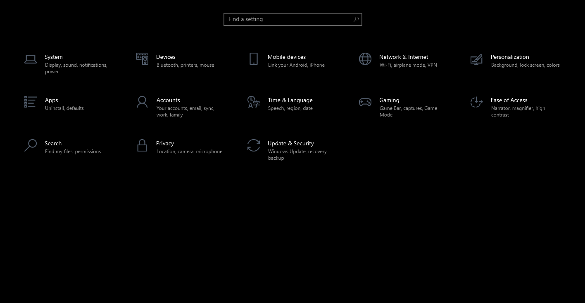
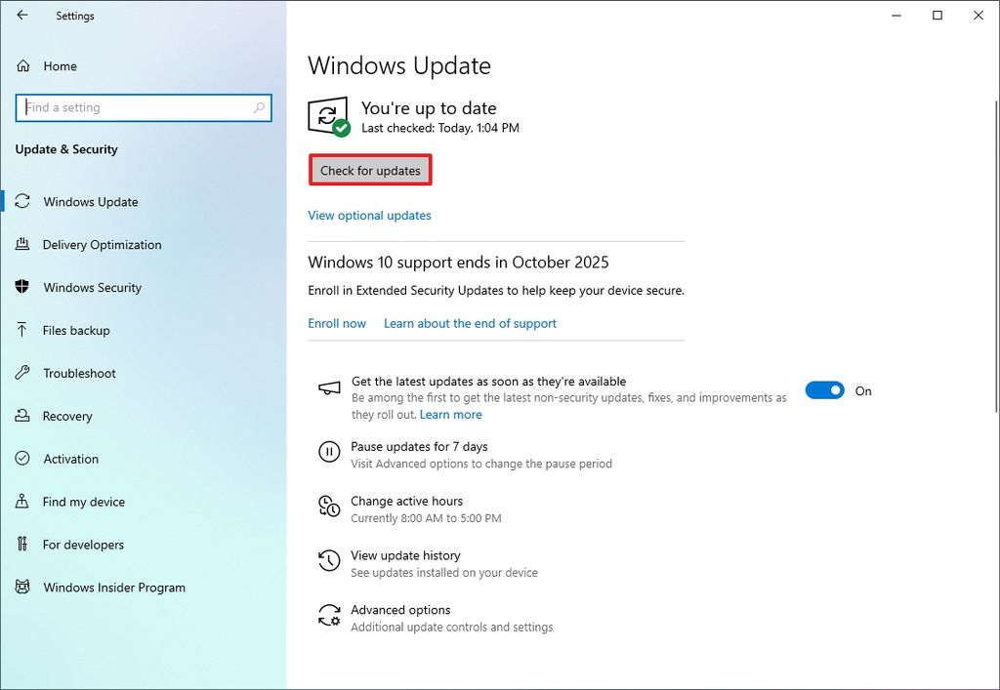
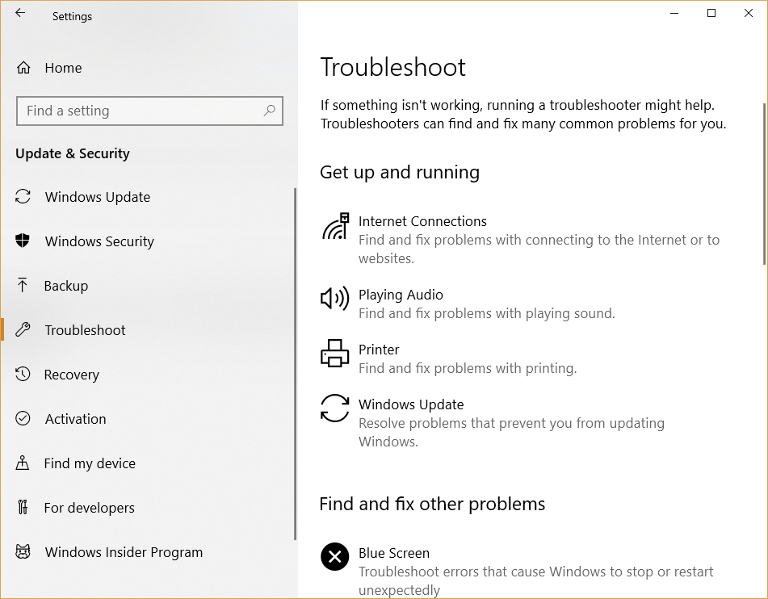
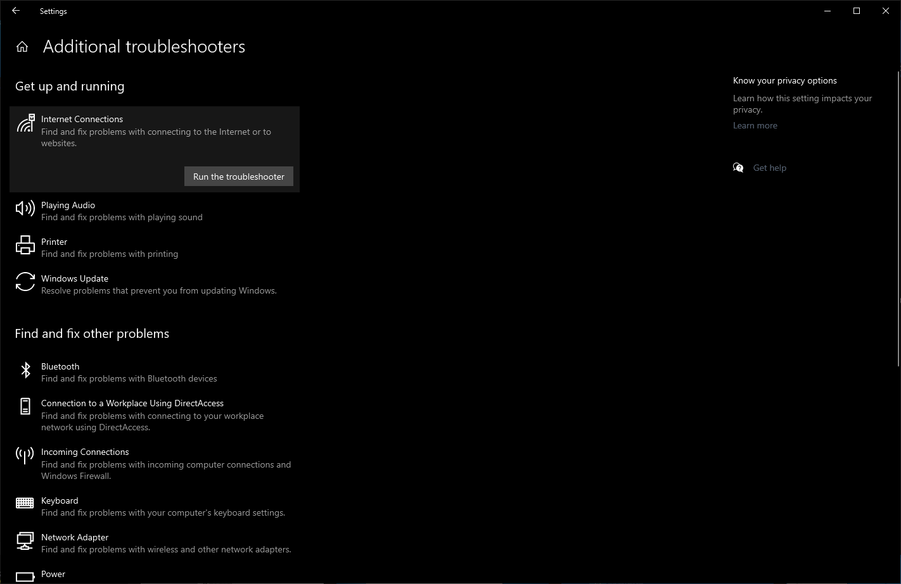

Troubleshooting Common Issues
This guide outlines the standard operating procedures for diagnosing and resolving common technical issues, including web application performance, network connectivity resets, and using built-in Windows diagnostic tools.
1. Web Application Issues
For employees in Assurance, Tax, Strategy and Transactions, and Consulting, web application performance is critical. If you experience lag or crashes, particularly when working with large spreadsheets in browser-based tools, ensure your browser cache is cleared and hardware acceleration is enabled in settings.

Step 1: Open Edge Settings and navigate to 'Privacy, search, and services' > 'Clear browsing data'. Select 'All time' and ensure history and cache options are checked.

Step 2: Scroll down to ensure 'Autofill form data', 'Site permissions', and 'All data from previous versions' are also selected for a comprehensive clear.
Step 3: Finally, verify 'Media Foundation data' is included, then click 'Clear now' to resolve performance issues.
2. Resetting Wi-Fi Connection
If you are experiencing persistent Wi-Fi connectivity issues, you can perform a network reset using the Command Prompt (CMD).
Follow these steps to open the Command Prompt:
- Press the Windows Key on your keyboard or click the Start button.
- Type "cmd" or "Command Prompt" into the search bar.
- Click on the Command Prompt app to open it.
- Once the terminal window appears, type the following commands in order:
Restart your computer after executing these commands to apply the changes.
3. Windows Network Troubleshooter
If the manual commands do not resolve your issue, you can use the built-in Windows Network Troubleshooter to automatically diagnose and fix common problems.
Follow these steps to run the troubleshooter:
- Start by pressing Win + I or clicking the Windows logo > Settings.
- Select Updates & Security.
- Choose Troubleshoot from the left-hand sidebar.
- Select Additional troubleshooters.
- Click Internet Connections and hit 'Run the troubleshooter'.

Step 1: Open the Windows Settings menu and navigate to 'Update & Security' to access system maintenance tools.

Step 2: Select 'Troubleshoot' from the left navigation pane.

Step 3: Click on 'Additional troubleshooters' and run the 'Internet Connections' tool.

Step 4: Select 'Internet Connections' and click on 'Run the troubleshooter'.
If you are using or planning to use an Ethernet cable, and encounter any Ethernet-related issues, please proceed to the IT help-desk for further assistance.